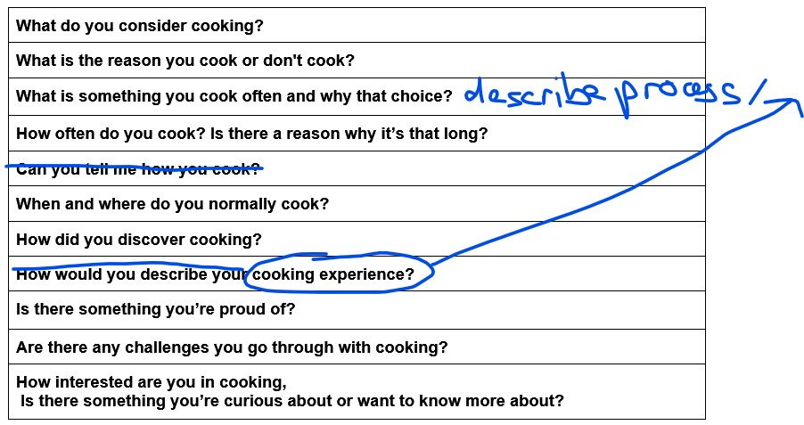
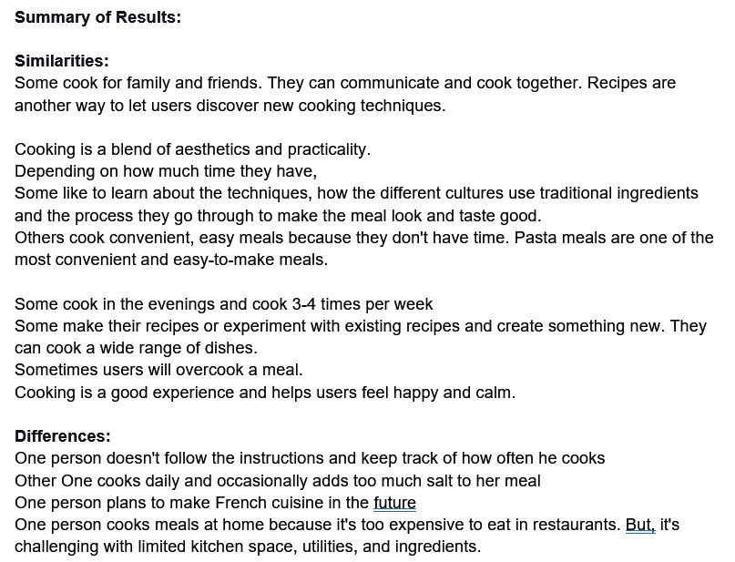

I started by identifying the target audience and the general subject I wanted to teach which was
university/college students studying interactive multimedia and design, who lived off campus.
The subject I choose to teach was cooking.
Next, I reached out to my classmates and asked them a series of questions I generated to gather information.
(I used Discord to contact them, either through voice calls or by having them write down their answers and send them back to me.)
After collecting their responses, I analyzed the similarities and differences among their responses to identify common tasks or objectives they wanted to accomplish.

It became clear that some people were interested in learning how to prepare complex dishes from different countries, including the history of the dish and its ingredients.
On the other hand, others preferred a simple quick dish with locally available ingredients.

Based on this analysis, I determined the layout of my teaching materials.
I decided to split it in half, with one side focusing on complex dishes and the other side featuring simple dishes.
Finally, I shared my prototype with the original participants of the interviews and recorded their feedback. I used their responses to generate next steps for improving the design and refining my teaching approach.